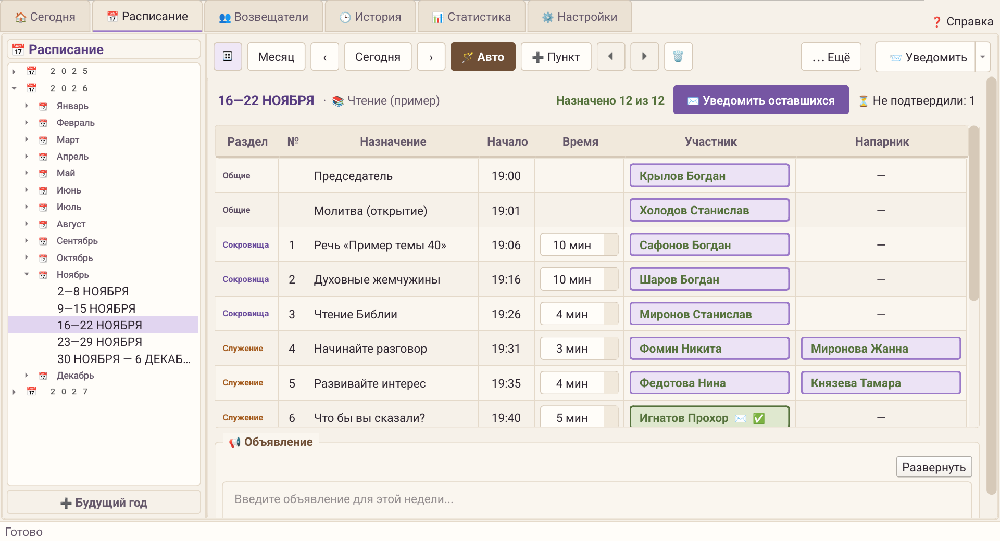
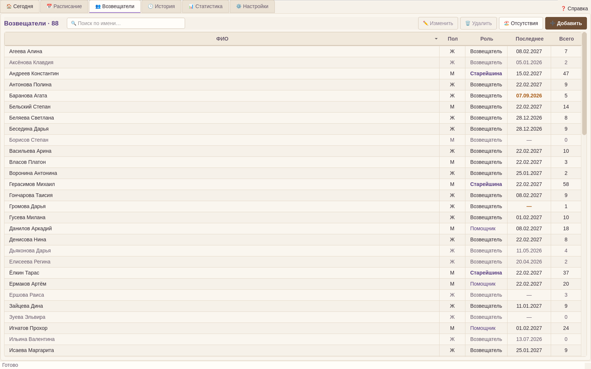
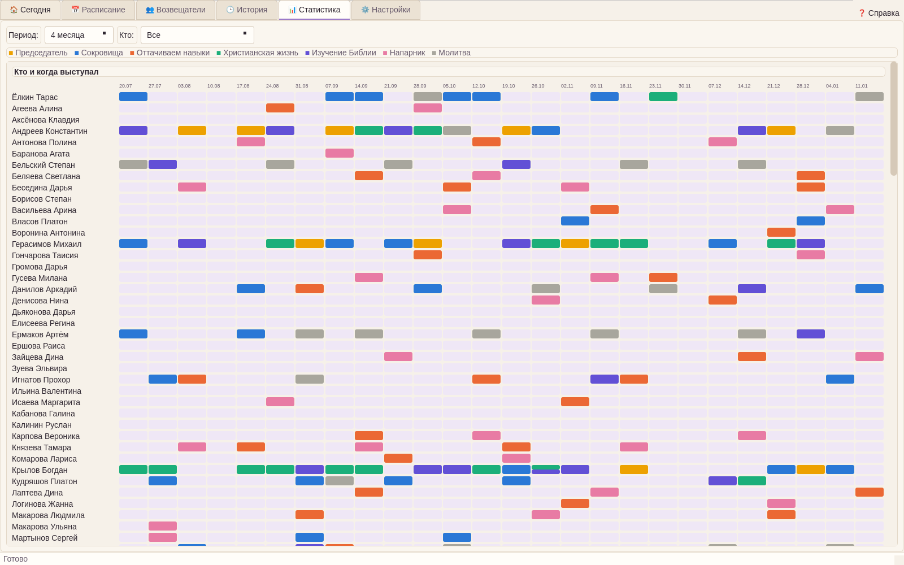
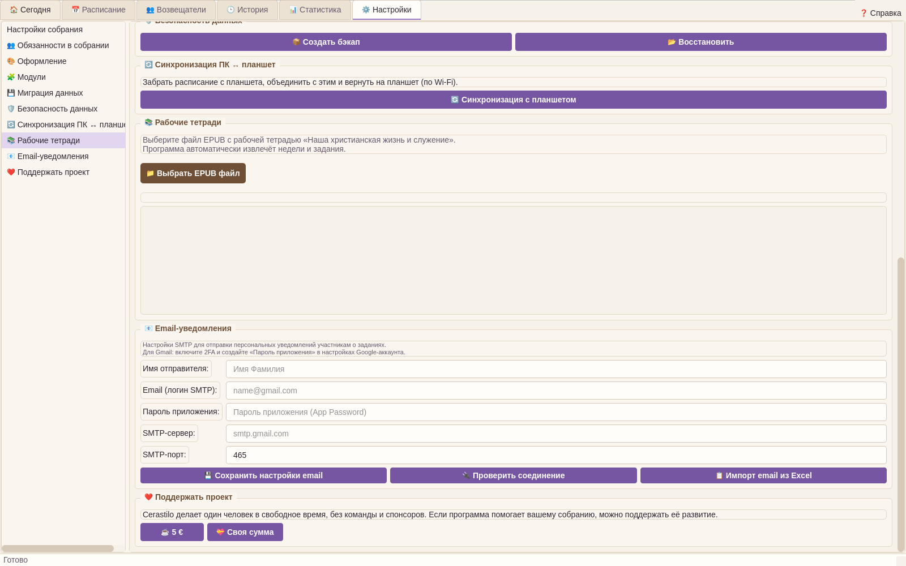

Доска месяца и авто-распределение
- check_circle Учитывает квалификации, пол, отдых и отпуск.
- check_circle Заполняет только пустые пункты — ваши ручные назначения остаются.
- check_circle Не понравилось — откат одним нажатием.

Cerastilo — бесплатный планировщик встречи «Христианская жизнь и служение». Две программы: для компьютера (Linux и Windows) и для Android-планшета. Каждая работает сама по себе, а вместе — делят одну базу.


Каждая программа полностью работает сама по себе. Если у вас есть и компьютер, и планшет — они синхронизируются по Wi-Fi и всегда показывают одно и то же.
Полноценное планирование: доска месяца, авто-распределение, печать, экспорт, письма участникам.
То же самое приложение и тот же вид. Работает без компьютера — удобно держать в руках прямо на встрече.

Планшет становится сервером, компьютер подключается сам — по адресу и коду из 6 символов. Брандмауэр настраивать не нужно.
Базы объединяются: побеждает более свежая правка, а копия перед слиянием сохраняется.

Нужен только компьютер или только планшет — берите одну программу. Синхронизация — по желанию.
Реальные скриншоты приложения (демо-база с вымышленными именами). Нажмите на картинку, чтобы открыть крупно.




Бесплатно для личного использования. Неофициальное приложение.
APK для Android-планшетов с архитектурой arm64.
AUR-пакет для Arch Linux и AppImage (x86_64) для других дистрибутивов.
yay -S cerastilo
Распакуйте ZIP и запустите cerastilo.exe. Остальные файлы оставьте без изменений.
Чтобы опубликовать Cerastilo в Google Play, нужны тестеры с Android-планшетом или телефоном. Что делать: установить приложение через Google Play (закрытое тестирование), пользоваться им пару недель и рассказать мне об ошибках.
Да. Cerastilo бесплатное для личного использования. Исходный код можно посмотреть, но проект не является открытым: изменять, распространять и продавать приложение можно только с письменного разрешения автора. Подробности — в файле LICENSE.
Компьютер: Linux (AUR и AppImage x86_64) и Windows (ZIP для x64). Android-планшеты: APK для arm64.
Данные хранятся в локальной базе SQLite на вашем устройстве, своих серверов у проекта нет. Синхронизация идёт напрямую между вашими устройствами в локальной сети Wi-Fi: планшет — сервер, компьютер подключается к нему. Письма участникам уходят через ваш собственный SMTP-сервер.
Нет. Каждая программа работает сама по себе — можно пользоваться только компьютером или только планшетом. Синхронизация нужна, только если вы хотите, чтобы на обоих устройствах была одна и та же база.
Для работы с расписанием — нет. Интернет нужен только для отправки и получения писем.
Прямого импорта из NW Scheduler нет. Историю назначений можно загрузить из CSV-файла.
Да. Интерфейс есть на русском и английском; язык выбирается в «Настройках» и применяется после перезапуска.
Нет. Cerastilo не содержит текстов, изображений и других материалов JW.org и сам ничего не скачивает с этого сайта. Рабочую тетрадь вы скачиваете сами для личного использования и открываете в программе. Она раскладывает программу встреч по неделям только на вашем устройстве и никуда её не публикует. Cerastilo бесплатное и некоммерческое.
Нет. Неофициальное приложение. Не связано с Watch Tower Bible and Tract Society / JW.org.
Я разрабатываю Cerastilo самостоятельно. Если вам не хватает функции или вы нашли ошибку, напишите, что вы хотели сделать и что произошло.
Cerastilo делает один человек в свободное время. Приложение бесплатное, но если оно вам помогает, вы можете поддержать разработку. Это совершенно необязательно.
В планах: macOS и iOS. Cerastilo уже работает на Linux, Windows и Android. Версии для Mac, iPhone и iPad тоже в планах, но для разработки и проверки под них нужны устройства Apple, которых у меня пока нет. Пожертвования помогут их приобрести и ускорят появление этих версий.